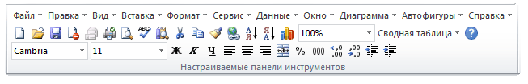

Tips_All_MakeMenu2003.xls (61,5 KiB, 1 722 скачиваний)
Tips_All_MakeMenu2003.xls (61,5 KiB, 1 722 скачиваний)
С приходом в нашу жизнь нового Excel 2007 в неё также пришли не только свыше миллиона строк, почти неограниченное количество условий условного форматирования и еще куча новых возможностей, но и новый стиль. Притом не просто новый, а совершенно переработанный, незнакомый, неузнаваемый и запутывающий. Кто-то годами пользовался 2003 Excel и настолько привык к его интерфейсу, что новый стиль был воспринят не просто в штыки - многие из этих людей до сих пор пользуются 2003 практически только из-за нежелания переходить на новый стиль.
Тем, кто боится перейти на новый интерфейс только по этой причине, а так же тем, кого мучает ностальгия по прежнему интерфейсу, могу предложить несложный код, который на вкладке "Надстройки" создает ряд меню, повторяющих старый добрый 2003.

Сам код:
Option Explicit '--------------------------------------------------------------------------------------- ' Procedure : MakeMenu2003 ' Purpose : Процедура создания меню в стиле Excel 2003 '--------------------------------------------------------------------------------------- Sub MakeMenu2003() Dim arr, cbArr, cbName As String Dim cbMenu, cbStandart, cbFormat Dim lc As Long 'Удаляем меню, если они уже созданы Call Del_Menu 'создаем массивы для создания меню 'имена cbArr = Array("Меню 2003", "Стандартная 2003", "Форматирование 2003") 'панель меню cbMenu = Array("30002|10", "30003|10", "30004|10", "30005|10", "30006|10", "30007|10", "30011|10", "30009|10", "30022|10", "30177|10", "30010|10") 'стандартная панель(основные иконки) cbStandart = Array("2520|1", "23|1", "3|1", "9004|1", "3738|1", "2521|1", "109|1", "2|1", "7343|1", "21|1", "19|1", "108|1", "128|6", "129|6", "9071|1", "1576|1", "226|13", "210|1", "211|1", "436|1", "1733|4", "30253|10", "984|1") 'панель форматов cbFormat = Array("1728|4", "1731|4", "113|1", "114|1", "115|1", "120|1", "122|1", "121|1", "402|1", "1643|1", "396|1", "397|1", "398|1", "399|1", "3162|1", "3161|1") 'объединяем в один массив для более простого вызова arr = Array(cbMenu, cbStandart, cbFormat) For lc = LBound(cbArr) To UBound(cbArr) CreateMenu (cbArr(lc)), arr(lc) Next lc End Sub Function CreateMenu(cbName As String, arr) Dim vType, vID, lc As Long Dim asSp On Error Resume Next With Application.CommandBars.Add(cbName, , , True).Controls For lc = LBound(arr) To UBound(arr) asSp = Split(arr(lc), "|") .Add Type:=Val(asSp(1)), ID:=Val(asSp(0)) Next End With 'Делаем меню видимым Application.CommandBars(cbName).Visible = True End Function '--------------------------------------------------------------------------------------- ' Procedure : Del_Menu2003 ' Purpose : Процедура удаления ранее созданного меню Excel 2003 '--------------------------------------------------------------------------------------- Sub Del_Menu() On Error Resume Next Dim x For Each x In Array("Меню 2003", "Стандартная 2003", "Форматирование 2003") Application.CommandBars(x).Delete Next End Sub
Учитывайте, что созданная панель будет существовать даже после закрытия файла и даже после закрытия Excel.
Так же прилагаю файл, в котором можно нажатием кнопок создать меню и удалить. Для тех, кто незнаком с макросами: прежде чем попробовать создать меню с помощью выложенного здесь файла настоятельно рекомендую прочесть эту статью: Почему не работает макрос?
Конечно, это не лучший вариант и если поискать в сети, то можно найти программы, которые так же воссоздают меню в стиле 2003, но почти все они платные.
Скачать пример:
Tips_All_MakeMenu2003.xls (61,5 KiB, 1 722 скачиваний)